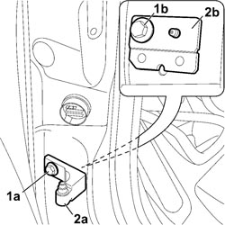
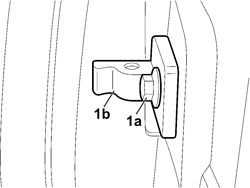

7005A24 FRONT SIDE DOOR HINGES (BOLTED) - R.R. WITH DOOR DETACHED
- Path
- Procedures > 70 FITTINGS > 7005 PASSENGER COMPARTMENT FRONT SIDE DOORS > 7005A FRONT DOOR ASSEMBLY > 7005A24 FRONT SIDE DOOR HINGES (BOLTED) - R.R. WITH DOOR DETACHED
- Kind
- repair procedure (removal / refitting; the operation number is the code)
- Applies to
- all engines; all production periods
- Interactive page
- https://sloeber94.github.io/elrnDB-fCrm/en/#/194000836
Applies to: all engines; all production periods
 Removing
Removing
 Refitting
Refitting- Carry out the procedures described below for the removal of the bodyshell side half hinges.
- For the driver's front side door:
Op. 5010C57 LEFT LOWER AIR DIFFUSER - R R
Op. 7040A44 LEFT DASHBOARD SIDE TRIM - R.R.
Op. 7040A30 LEFT LOWER DASHBOARD TRIM - R.R.
Op. 7025A24 BONNET LID OPENING LEVER - R+R
Op. 7040L39 LEFT FRONT DOOR COMPARTMENT SILL PLATE R R
Op. 5505A35 MAIN BODY COMPUTER/JUNCTION UNIT - R.R.
- For the passenger front side door:
Op. 5010C55 RIGHT LOWER AIR DIFFUSER - R+R
Op. 7040A45 RIGHT DASHBOARD SIDE TRIM - R.R.
Op. 5570T85 CD/AUDIO PLAYER LOADER - R R
Op. 7040A31 DASHBOARD COMPARTMENT ASSEMBLY - R.R.
Op. 7040L41 RIGHT FRONT DOOR COMPARTMENT SILL PLATE RR
1. Undo the outer and inner fixing bolts (1a) and (1b).
2. Remove the half hinges (2a) and keep the plate (2b).

Applies to: all engines; all production periods
1. Undo the fixing bolts (1a) and remove the half hinges on the door (1b).

Applies to: all engines; all production periods
Refitting
Removing- Fit the half hinges on the bodyshell side, the half hinges on the door side and screw in the fixing bolts without tightening them to torque.
Op. 7210E36 R.R. FRONT SIDE DOOR
- For the driver's front side door:
Op. 5505A35 MAIN BODY COMPUTER/JUNCTION UNIT - R.R.
Op. 7040L39 LEFT FRONT DOOR COMPARTMENT SILL PLATE R R
Op. 7025A24 BONNET LID OPENING LEVER - R+R
Op. 7040A30 LEFT LOWER DASHBOARD TRIM - R.R.
Op. 7040A44 LEFT DASHBOARD SIDE TRIM - R.R.
Op. 5010C57 LEFT LOWER AIR DIFFUSER - R R
- For the passenger front side door:
Op. 7040L41 RIGHT FRONT DOOR COMPARTMENT SILL PLATE RR
Op. 7040A31 DASHBOARD COMPARTMENT ASSEMBLY - R.R.
Op. 5570T85 CD/AUDIO PLAYER LOADER - R R
Topics linked from this page (13)
- 5010C55 RIGHT LOWER AIR DIFFUSER - R+R
- 5010C57 LEFT LOWER AIR DIFFUSER - R R
- 5505A35 MAIN BODY COMPUTER/JUNCTION UNIT - R.R.
- 5570T85 CD/AUDIO PLAYER LOADER - R R
- 7005A14 FRONT SIDE DOOR - ADJUST CENTERING AND MOULDING - INCLUDES ADAPTATION OF HINGES AND SEALS ON DOOR COMPARTMENT
- 7025A24 BONNET LID OPENING LEVER - R+R
- 7040A30 LEFT LOWER DASHBOARD TRIM - R.R.
- 7040A31 DASHBOARD COMPARTMENT ASSEMBLY - R.R.
- 7040A44 LEFT DASHBOARD SIDE TRIM - R.R.
- 7040A45 RIGHT DASHBOARD SIDE TRIM - R.R.
- 7040L39 LEFT FRONT DOOR COMPARTMENT SILL PLATE R R
- 7040L41 RIGHT FRONT DOOR COMPARTMENT SILL PLATE RR
- 7210E36 R.R. FRONT SIDE DOOR